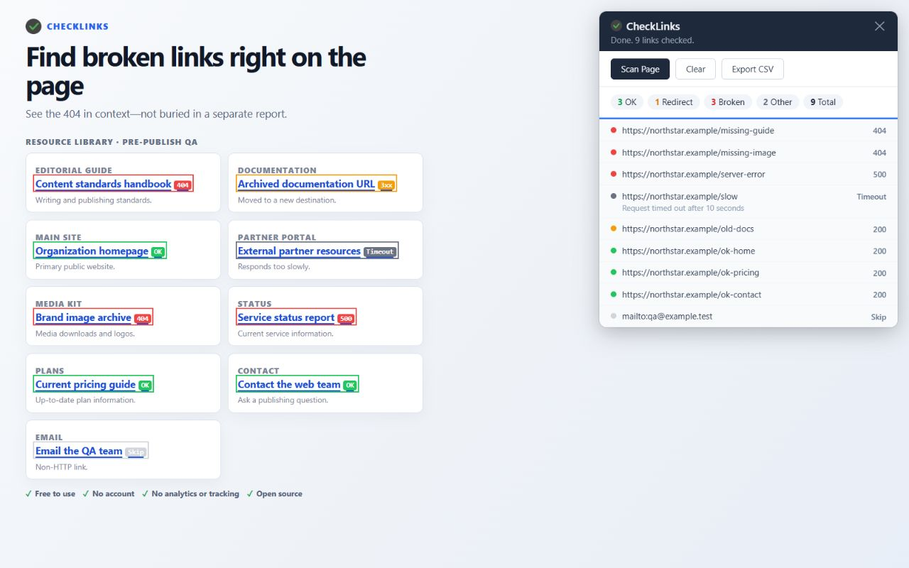

Publishing QA · CheckLinks guide
How to Check Links Before Publishing
Short answer: Open the staging or draft page in Chrome, run CheckLinks, filter Broken, Redirect, and Other, jump to each flagged link, fix the source, re-scan, and export the final CSV. This is page-level evidence, not a full-site crawl.
Short demonstration: a pre-publish pass
- Scan the version you are about to ship. Load the staging URL or draft preview as a reviewer would see it, then click the CheckLinks toolbar icon. The extension reads the page's
<a href>links and shows status outlines in context while the floating results panel fills in. - Triage by the panel's summary. Select Broken for 4xx and 5xx responses. Select Redirect to inspect links that resolve through a redirect. Select Other for network errors, timeouts, skipped fragment links, and non-HTTP schemes such as
mailto:ortel:. - Use click-to-jump for the fix. Click a result in the panel to scroll to the matching link on the page. Check the surrounding sentence, then correct the URL in the CMS, Markdown, template, or component that produced it. A valid response does not make an incorrect destination or misleading anchor text good.
- Re-scan the corrected page. Run a fresh scan after the edits are present in the same staging or preview environment. Work from the new result set so a previously captured failure does not get mistaken for current evidence.
- Export the handoff. When the remaining findings are understood, click Export CSV. The report includes URL, status, category, status text, and a followed redirect target when one is available. Attach it to the release ticket or keep it with the editorial sign-off.

What to verify before you call it clean
Use the HTTP result as one gate in a release checklist. Read the destination, confirm the link supports the claim around it, and check that the page is intended to be discoverable. A 200 response can still lead to the wrong article, an empty app route, a noindex page, or content that does not match the anchor.
For a small site, scan the pages changed in the release plus the shared navigation, footer, and high-traffic landing pages. If a template produces many links, scan a representative rendered page and separately inspect any route or asset types the page does not expose as anchors.
Ready for the next staging pass?
Install CheckLinks in Chrome and keep the scan beside the page you are reviewing.
Install CheckLinks from the Chrome Web Store